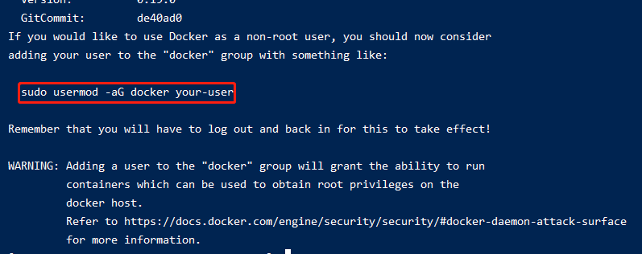
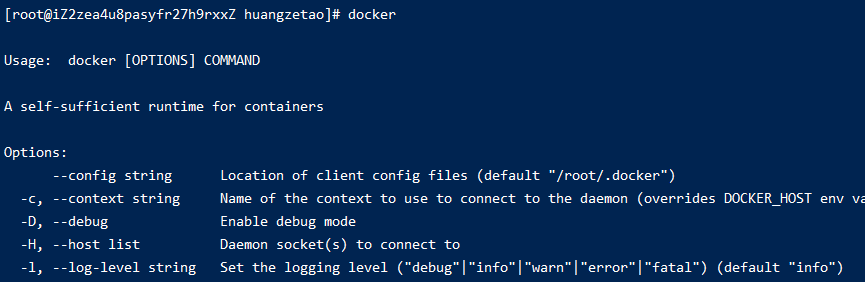
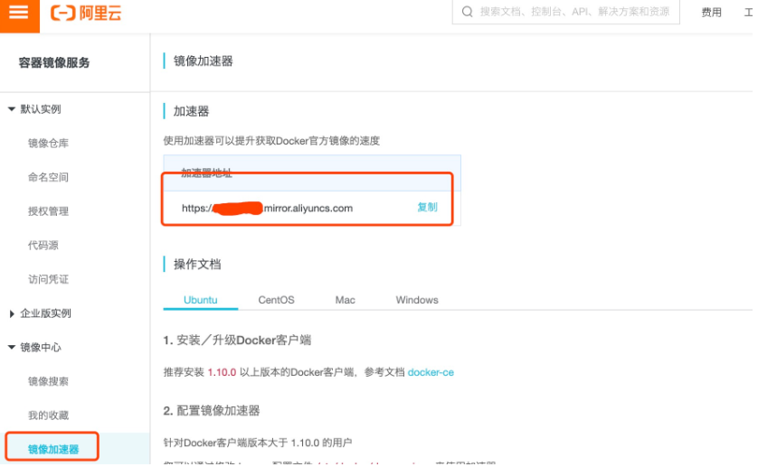
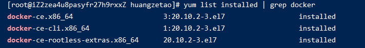

002-docker在Linux的安装和卸载
1、安装docker
参考资料: Linux安装docker
- 执行
curl -fsSL https://get.docker.com | bash -s docker --mirror Aliyun

看上面提示中有一句话sudo usermod -aG docker your-user，提示我们可以执行这条命令给予权限
docker安装后，默认情况下只允许root用户来执行，比如执行:sudo usermod -aG docker apps
执行上面是为了给用户apps这个用户加到docker组里面，这样apps这个用户就有了执行docker的权限了
- 验证
docker

2、镜像加速
由于国内墙的问题，需要配置下阿里云的加速器，这样就直接从阿里云下载
- 通过阿里云镜像获取地址获取到地址

- 在服务器上执行
mkdir -p /etc/docker
vim /etc/docker/daemon.json
3. 编辑`daemon.json`的内容，如下
{ "registry-mirrors": ["https://6z3gokzw.mirror.aliyuncs.com"] // 具体值从阿里云管理平台获取 }
4. 重新加载配置并重启
```shell
systemctl daemon-reload
systemctl restart docker
3、卸载docker
- 执行
yum list installed | grep docker，查看yum安装过哪些，得到下面的结果

- 把上面列表的都删除即可，执行
yum -y remove docker-ce-cli.x86_64
yum -y remove docker-ce.x86_64
3. 执行`rm -rf /var/lib/docker`
4. 执行`docker`检查，报没有该命令了